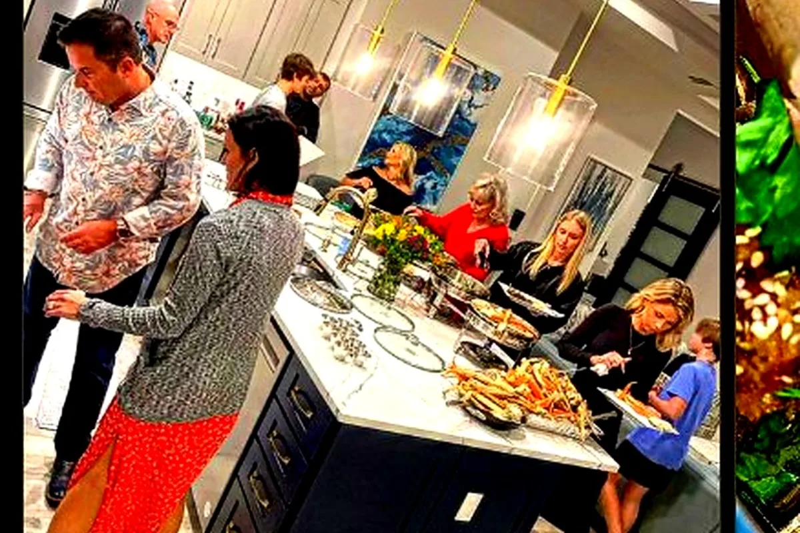
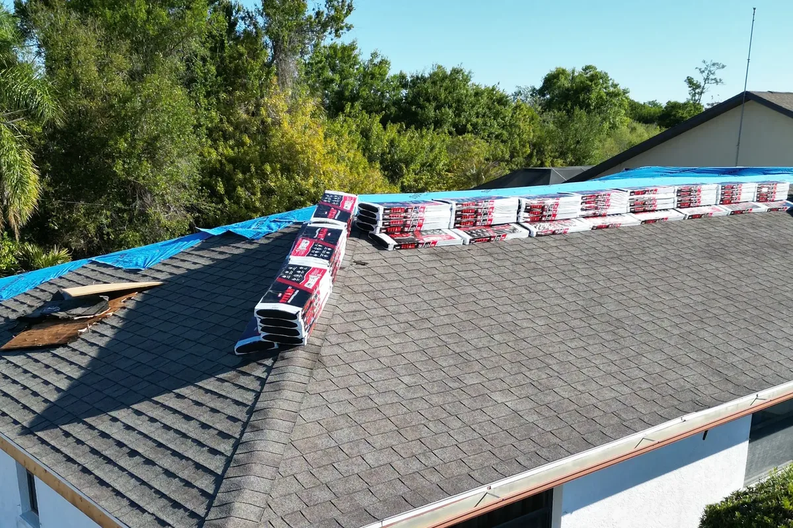
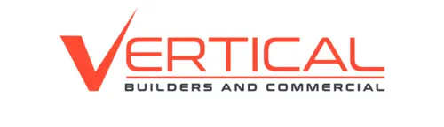

Websites, software & growth systems for real businesses
Turn how your business runs into a system that works online.
Wavy Sites designs and builds websites, custom software, CRMs, and automation for businesses that have outgrown basic tools — built around how you actually work, not a template.
Websites
Custom Software
Automation
SEO & Growth

Build Formula
Strategy + Design + Engineering + Systems
A build pipeline that takes a business problem all the way to a working website, application, or CRM.
What Wavy Sites builds
Four ways to modernize your business.
Every project is shaped around clarity, trust, conversion, and a clean launch path — whether it's a website, software, or both.
Websites & Digital Experiences
Custom websites, redesigns, and landing pages for service businesses, ministries, local brands, and organizations that need to look credible and convert online. Mobile-first, fast, and built to rank.
Custom Software
CRMs, internal dashboards, customer portals, scheduling systems, and full applications built in React and Next.js — designed around how your team actually works, not a generic template.
AI & Automation
Lead automation, intelligent intake, AI-assisted workflows, and internal tools that cut down repetitive work — connected directly to the systems your team already uses.
Search & Growth Infrastructure
SEO, local SEO, AEO, and GEO — structured so search engines, maps, and AI answer engines all understand what your business does and where it serves.
More than a pretty page
You bring the objective. We build the system.
A messy business problem isn't a reason to wait on a website — it's the starting point. "We're losing leads." "We run everything on spreadsheets." "We need customers to book and pay online." Wavy Sites turns objectives like these into finished, working systems.
View the full client roadmapLosing leads, running on spreadsheets, a site that doesn't convert, hours of manual work.
We turn a vague objective into a scoped plan: what to build, and why.
Website, software, automation, or all three — built around how you actually work.
A working system: a CRM, a booking flow, a dashboard, a lead funnel — not just a deliverable.
Custom software, built and shipped
Two real businesses. Two working systems.
This isn't a pitch — these are systems Wavy Sites designed and built, currently running the operational side of two real businesses.

Custom Software · Hospitality & Catering
The Chef Catering CRM
A catering business needed more than a menu and a contact form — every inquiry had to become a tracked booking, quoted, scheduled, and paid, without manual re-entry. Wavy Sites built a full operational CRM behind the public site: leads, clients, events, venues, quotes, a calendar, revenue tracking, Stripe payments, and an internal AI assistant.
Leads & Clients
Events & Venues
Quotes & Calendar
Stripe Payments
AI Assistant
See how it's built


Custom Software · Construction & Contracting
Vertical Ops
A licensed Florida general contractor needed more than a lead-gen site — subcontractor insurance certificates, estimates, and scheduling were scattered across spreadsheets and email. Wavy Sites built Vertical Ops: an internal CRM and compliance center tracking leads, projects, estimates, invoices, scheduling, and subcontractor insurance records in one place.
Leads & Projects
Estimates & Invoices
Compliance Center
Scheduling
Activity Log
See how it's built
Recent work
Projects built with business purpose.
A curated selection of real, deployed work. Every card links to the live site.

Lead generation · Port Charlotte, FL
Community Pools LLC
Pool resurfacing and repair leads were going to competitors with a stronger web presence. Built a before/after-driven site with a real project gallery and a quote-first layout.
Visit site
Interior finishing · Quote-focused
Residential Finishes
Needed proof of craftsmanship to close quote requests. Built a before/after gallery with two separate conversion paths — one for quote requests, one for employment applicants.
Visit site
Pavement striping & sealcoating
Adams Striping
Built a service site with dedicated pages for crack sealing and sealcoating, plus a real before/after project gallery, to make bid-stage credibility immediate.
Visit site
Drywall contractor · North Port, FL
Veterans Drywall
Built with a full image-usage system — hero, social preview, mobile, and gallery variants each defined — so the site stays visually consistent across every placement.
Visit siteA strategic service, not just an audit
See exactly where you stand against the competition — and what to fix first.
The Competitive Growth Blueprint evaluates your website and digital presence against roughly five local competitors: structure, service pages, calls to action, conversion flow, trust signals, local SEO, content gaps, and AEO/GEO readiness — how visible you are to AI answer engines, not just search results.
Get a Growth BlueprintWhat you get
- A competitor-by-competitor comparison
- A recommended sitemap and priority service pages
- Conversion and CTA recommendations
- A search and content strategy, prioritized by impact
How it works
Simple process. Real structure.
A focused build path keeps every project moving without losing quality — whether it's a website or a full system.
Discover
The business goal, the customer, the workflow, the competitors, and the bottleneck.
Architect
Decide what actually needs to get built: a website, custom software, automation, or some combination.
Design
UX, content hierarchy, and visual system for what's being built.
Build
Development, in the simplest stack that fully supports the job.
Launch
Deploy, test live forms and integrations, verify on real devices, hand off.
Grow
Ongoing improvement based on performance, feedback, and changing needs.
Built on a modern, proven stack
The tools behind the systems.
React
Next.js
TypeScript
Supabase
Stripe
Netlify
Vercel
AI Integrations
The right tool for the job — static and fast for a lean site, full-stack when the project needs real software.
Why businesses choose Wavy Sites
Strategy, design, and engineering under one roof.
Business-first, not platform-first
Every project starts with the problem, not a template.
Custom software, not just websites
The Chef CRM and Vertical Ops are real, working systems — not mockups.
One connected build process
Strategy, design, and engineering stay coordinated from discovery through launch, so the project doesn't get lost between disconnected teams.
Direct communication
You work with the person building it, not an account manager relaying messages.
Ways to work
Choose the scope that fits where your business is.
A focused, professional presence.
For businesses that need a homepage or multi-section site, done right.
- Homepage or multi-section site
- Mobile-first design
- Basic SEO setup
- Working contact or quote form
- Deployment guidance
Growth
For businesses that need a larger site, search strategy, and real lead systems.
- Everything in Launch
- SEO / AEO / GEO improvements
- Google Business and local visibility support
- Landing page and ad-campaign readiness
- Lead capture and follow-up systems
Custom Systems
For CRMs, dashboards, portals, automation, and AI integrations.
- Everything in Growth
- Custom software design and development
- CRM, portal, or dashboard build
- AI-assisted workflows and automation
- Ongoing system maintenance options
Custom scope — every project is estimated after a discovery call. Wavy Sites doesn't publish fixed prices, since a website and a full CRM build are very different projects.
Questions clients ask
Clear answers before the first call.
FAQ content helps customers understand the process and gives search engines cleaner answers to index.
What kind of businesses does Wavy Sites help?
Wavy Sites is built for small businesses, local service companies, ministries, community organizations, creators, restaurants, consultants, and brands that need a professional online presence.
Can you redesign an existing website?
Yes. The process starts by inspecting what already works, identifying what is broken or weak, and improving the site without removing important content or approved design direction.
Do Wavy Sites builds include SEO?
Yes. Core SEO includes page titles, meta descriptions, heading structure, alt text, internal links, schema when appropriate, sitemap, robots file, and local/service-area language.
Will the website work on phones?
Yes. Mobile layout is treated as a launch requirement, including readable text, tap-friendly buttons, clean stacked cards, no horizontal overflow, and easy-to-use forms.
Can the site connect to Netlify or Vercel?
Yes. Static sites can be deployed on Netlify, while React/Vite or Next.js projects can be deployed on Netlify or Vercel depending on the project needs.
Do you build custom business software, not just websites?
Yes. The Chef Catering CRM and Vertical Ops are both real, working systems Wavy Sites designed and built — not templates.
Can you build a CRM for my company?
Yes, scoped around how your business actually operates — leads, clients, projects, scheduling, and whatever else your workflow needs.
Can you automate parts of my business?
Yes — lead intake, follow-ups, internal workflows, and AI-assisted tools that connect to systems you already use.
Do I own my website or custom software after launch?
Ownership, source-code access, hosting responsibilities, and any third-party licenses are defined clearly in the project agreement. Custom work is structured so clients understand exactly what they receive at handoff.
Can you maintain the system after launch?
Yes. Ongoing maintenance, support, and improvement plans are available after launch.
How much does a custom website or software project cost?
It depends on scope, so Wavy Sites doesn't publish fixed prices — every project gets a real estimate after a discovery call.
Start your project
Tell Wavy Sites what you're trying to build.
Send the objective, the business problem, and what you need the end result to do — a website, software, automation, or all three. The best projects start with clear direction.